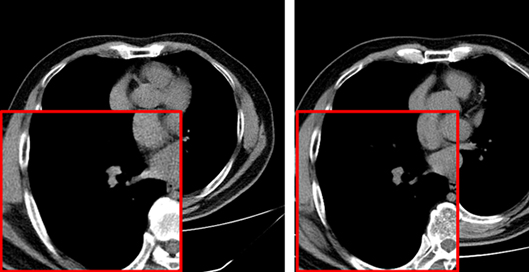
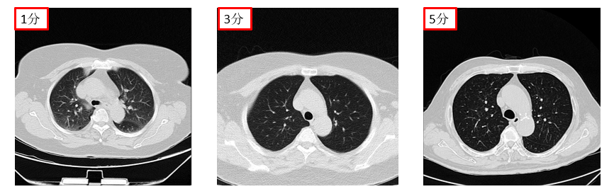

Multi-Task Model for Chest CT Image Quality Assessment

Published Wed 06 September 2023
In recent years, particularly during the COVID-19 pandemic, there has been a significant increase in the production of Computerized Tomography (CT) images for the evaluation of lung diseases. However, the accuracy of diagnosis heavily relies on the quality of CT imaging. Low-quality images can greatly impact clinical diagnosis, leading to potential misdiagnosis. Assessing the quality of a massive volume of CT images poses a significant challenge.
To address these issues, we have taken the initiative to construct a dataset comprising 800 CT volumes specifically for chest CT image quality assessment. Subsequently, we have developed a multi-task model for assessing and classifying the quality of chest CT images. This model is capable of automatically classifying CT image sequences based on different visual inspection windows, as well as estimating a quality score for each CT image. The estimated quality score aims to align with the visual score provided by clinicians.
Our research demonstrates that our model has the potential to replicate the quality evaluation performed by experts. By leveraging this model, we can effectively assess the quality of chest CT images and provide more accurate and reliable evaluations. This, in turn, can assist clinicians in making informed decisions and improve the overall diagnostic accuracy in the field of chest imaging.
Through the integration of advanced machine learning techniques, our approach represents a significant step forward in addressing the challenges associated with CT image quality assessment. By automating the classification and quality estimation process, we aim to enhance the efficiency and reliability of diagnosing lung diseases based on CT imaging. Our research has the potential to contribute to the development of robust systems that can aid medical professionals in providing better patient care, particularly in the context of chest imaging during the COVID-19 pandemic and beyond.
Project leaders
SIYIXUN
Project Example
Partner Organisations
深圳人民医院上海交通大学



© Generalized Electric Medicine 2023 of Macao polytechnic university.
The Generalized Electric Medicine is part of the Macao polytechnic university.